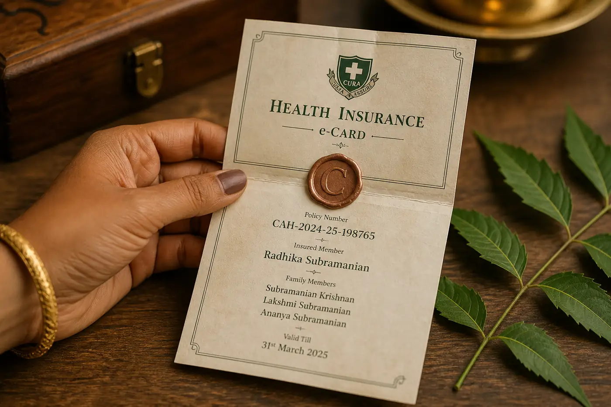

We write the clauses households actually trip on — not ten tips for living well. Lanes: waits, cashless, portability, elder, GST. The long essay is twenty-four months on Bloom. The grove is filterable. Ask the parlour for the page number.
5Lanes in the grove: wait, cashless, port, elder, GST
12Words in the glossary. Ask for the page
6Desk files the parlour still opens
From the parlour · 12 min
The 24 months nobody prints on the ad
Bloom is a rider. The wait is twenty-four months from the day the copper seal hits the Kin grove. An Instagram tile that says “covered from day one” without the number is a tile we will not run.
24 moWait from Bloom issue
12 wkPregnant now — this delivery is out
90 dNewborn in a listed labour room
The clock starts on the rider date — not on a lifestyle film
The clock starts on the rider start date, not on the day the household first thought about a labour room. That sentence belongs on the ad, not only on page 41 of the specimen.
If you are already twelve weeks pregnant at proposal, Bloom will not rain on this delivery.
Newborn cover, when Bloom is sealed, is ninety days if the child is born in a network labour room. It is not a free Solo ring for the rest of the year. After ninety days you propose the child as a named branch or you stand without them.
We will not sell Bloom onto a grove that already has a confirmed EDD inside the wait. Register the household, read the rider, then decide. This is a demo theme — the clause is still the product.
“Covered from day one” without twenty-four months is a tile we will not run. The wait is the product.
02 · The clock
Rider issue, not EDD
The twenty-four months start when the copper seal hits Bloom — not when a labour room first entered the conversation.
03 · The branch
Ninety days, then a name
A newborn is not a free Solo ring. After ninety days in a listed room, propose the child or stand without them.
Lanes
Filter the grove
Twelve files the rain desk still opens. Each card holds one number you can stand under — then a door to the cover that prints it.
12 essays · all lanes

Waiting periods · 8 min
Room-rent caps in 800-word English
A 1% cap on a ₹5L ring is ₹5,000 a day. Choose a ₹12,000 room and the surgeon, OT and implants are cut in the same ratio — not a corridor upgrade “policy.”
₹5,000 a dayKin ₹10L in this demo prints “no 1% cap.” A lower ring names the rupee, never a buried percentage.
Crest pays after a deductible. The first ₹10L still needs Kin, Solo, Elder, or another insurer’s base. A cheap 50L ad without that sentence is a Crest we will not sell.
₹10L firstYou cannot skip a PED year by buying only the top-up. Keep a grove underneath.
Cataract, dialysis, chemotherapy, lithotripsy, colonoscopy with polypectomy — if the specimen lists them as day-care, a 24-hour stamp will not make a ward.
12 proceduresBring the specimen to the TPA desk, not a WhatsApp rumour that eight hours is inpatient.
After a Kin claim, SI refills for a later, unrelated admission the same year. It does not refill the dengue still in the ward. It does not duplicate NCB.
Same year, new illnessUnrelated means a different stay. Solo and Elder do not pretend they have this refill.
Pulse is a ₹25,000 OPD and diagnostics wallet. Consults and listed tests. It is not inpatient cover. Households sometimes buy it instead of Kin because the from-price is smaller. Then a dengue week arrives.
₹25,000 walletRaise a base canopy first. Sit Pulse beside it if you want the consults.